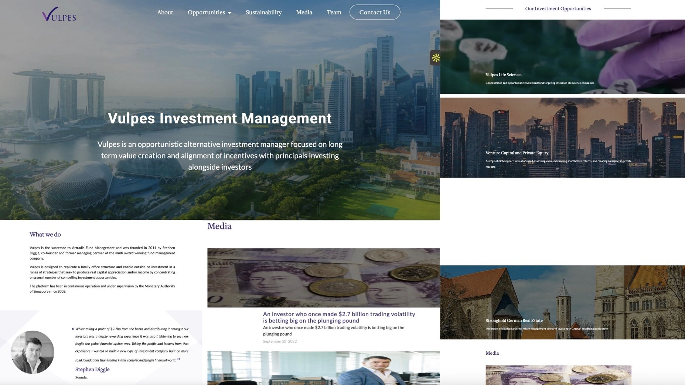
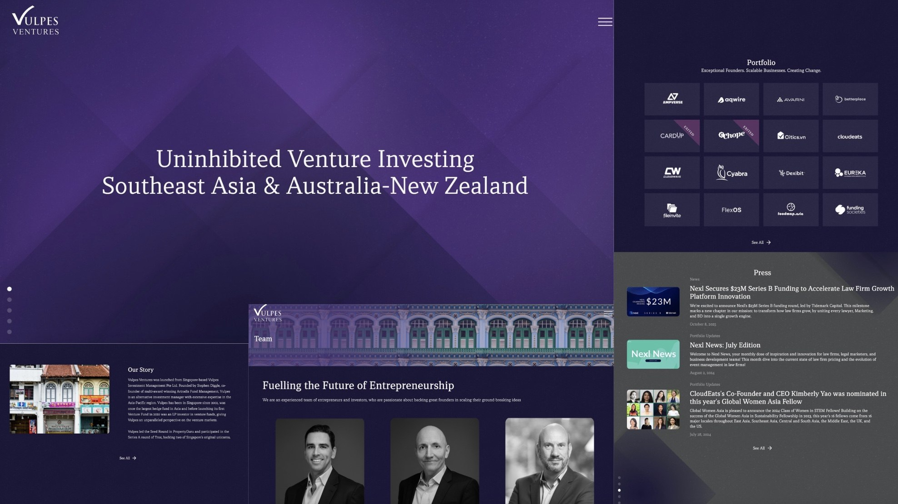
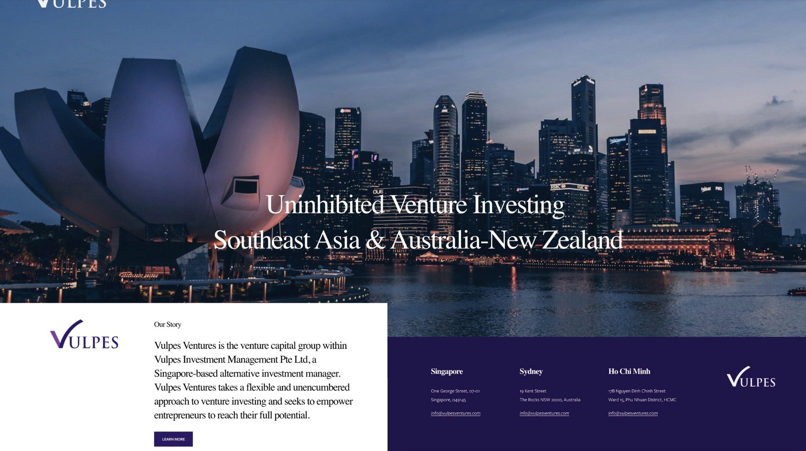
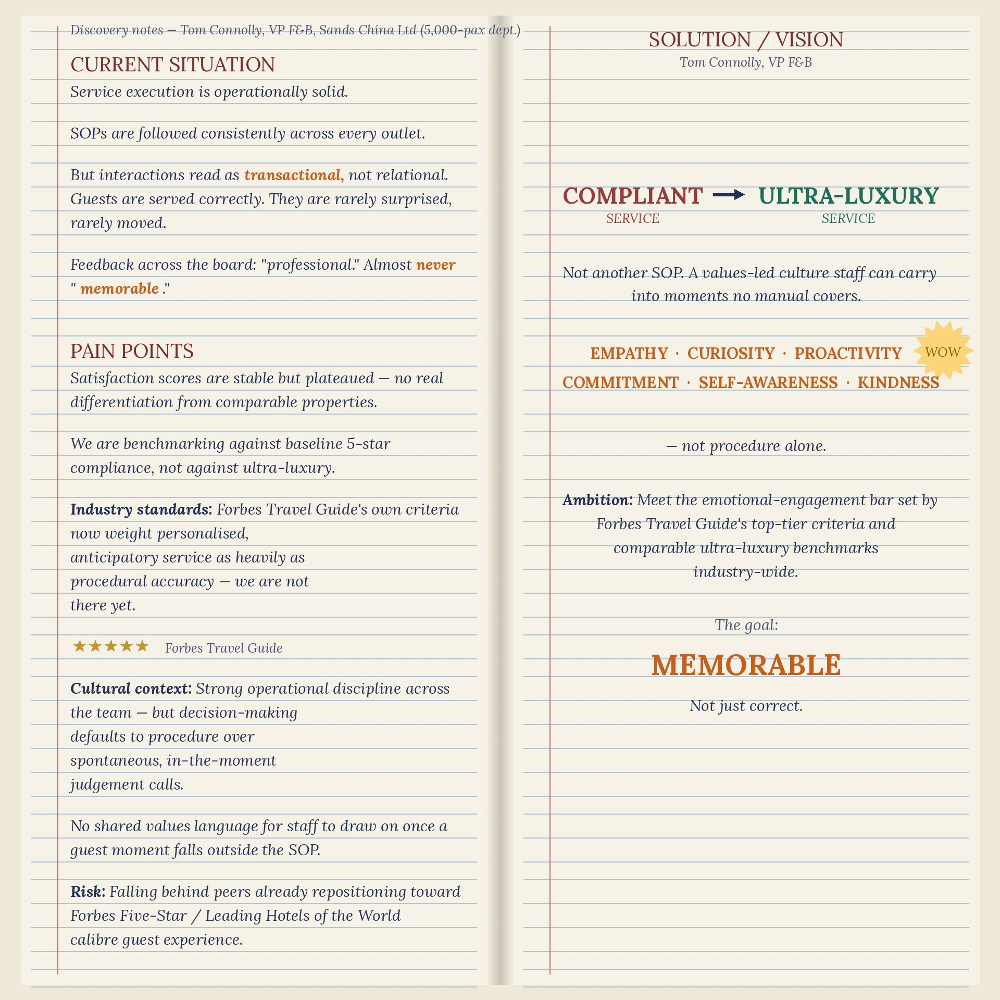
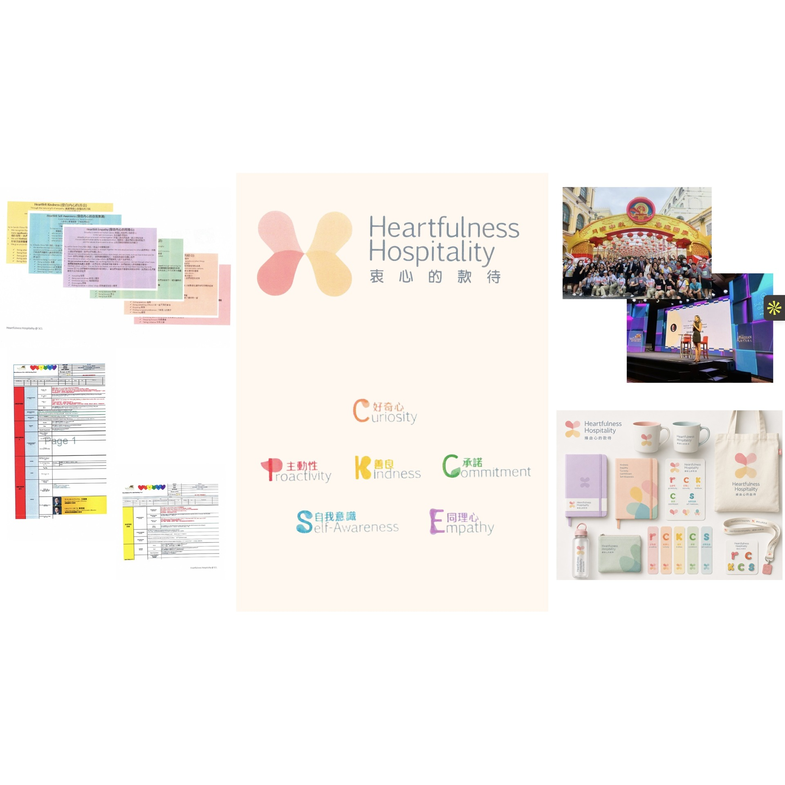

Before After
Vulpes Investment Management — Vulpes Website project as part of wider Rebrand
2023 – Present


Before After
Vulpes Investment Management — Vulpes Ventures Website project as part of wider Rebrand
2023 – Present
Before — drop in images/project-05-before.jpg
After — drop in images/project-05-after.jpg
Before
After
Vulpes Investment Management — Vulpes Investor Collateral
[Year / role]
 Before
After
Before
After
Bask — Social media revamp
Branding and Marketing Consultant · Dec 2024 – Jun 2025
Before — drop in images/project-06-before.jpg (old collateral)
After — drop in images/project-06-after.jpg (photoshoot production output)
Before
After
Bask — Content creation: sourced and produced two photoshoots, from photographer selection through on-set production
[Year / role]


Before After
Sands China Limited Workplace Culture — Heartfulness Hospitality
March 2022 – March 2023